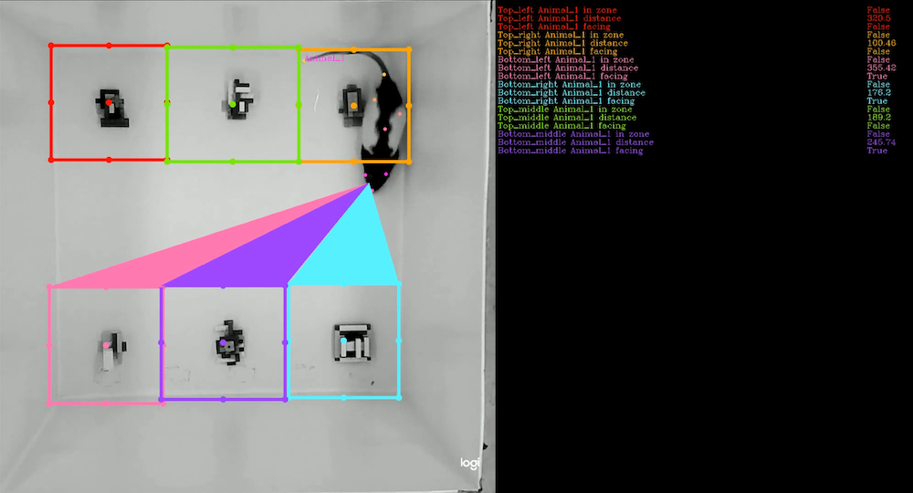
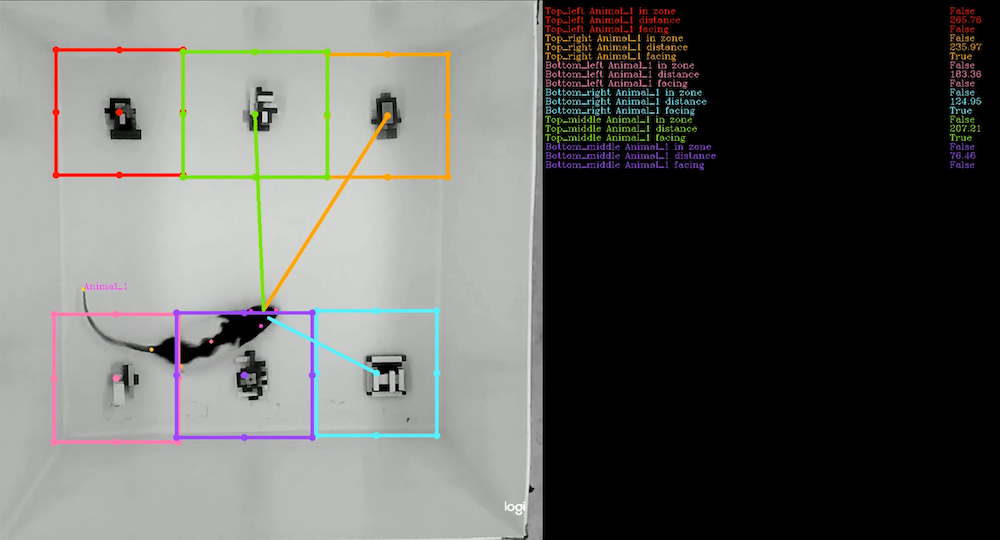
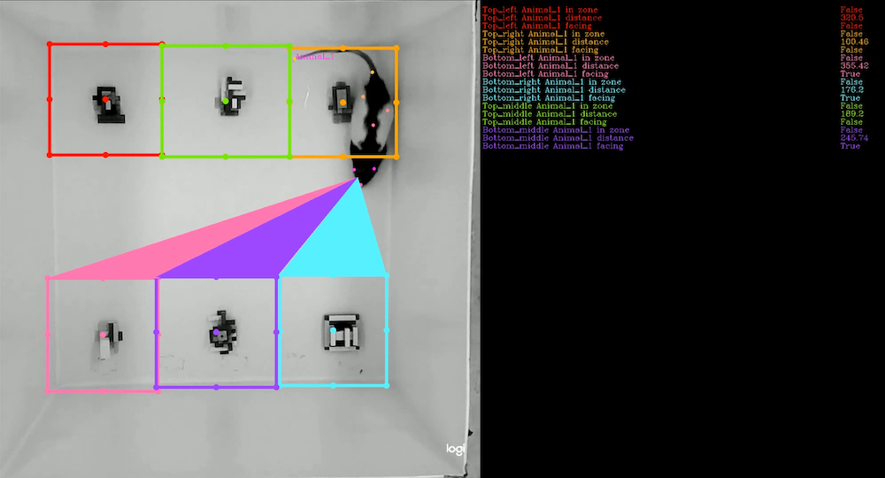
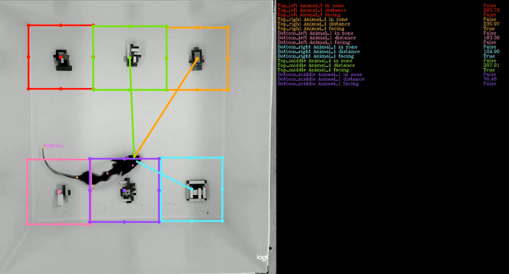
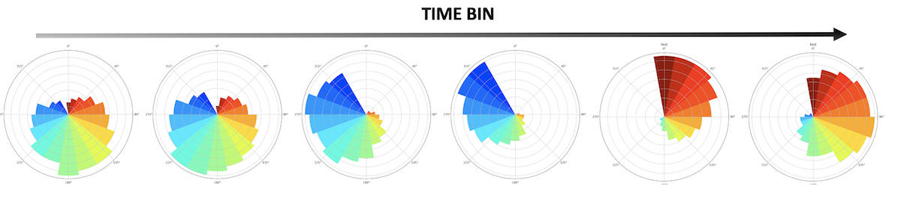
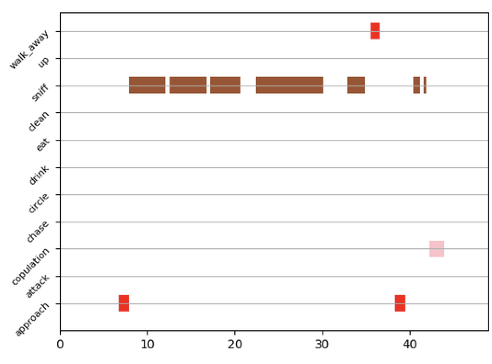

Plotting / visualization
Direction between animals
- class simba.plotting.directing_animals_visualizer.DirectingOtherAnimalsVisualizer(config_path: Union[str, PathLike], video_path: Union[str, PathLike], style_attr: Dict[str, Any])[source]
Bases:
ConfigReader,PlottingMixinVisualize when animals are directing towards body-parts of other animals.
Important
Requires the pose-estimation data for the left ear, right ears and nose of individual animals. For better runtime, use
simba.plotting.Directing_animals_visualizer.DirectingOtherAnimalsVisualizerMultiprocess().Note
Tutorial <https://github.com/sgoldenlab/simba/blob/master/docs/Scenario2.md#visualizing-data-tables>_.


- Parameters:
config_path (Union[str, os.PathLike]) – path to SimBA project config file in Configparser format
video_path (Union[str, os.PathLike]) – Path to video for to visualize directionality.
style_attr (Dict[str, Any]) – Video style attributes (colors and sizes etc.)
- Example:
>>> style_attr = {'show_pose': True, 'animal_names': True, 'circle_size': 3, 'directionality_color': [(255, 0, 0), (0, 0, 255)], 'direction_thickness': 10, 'highlight_endpoints': True} >>> test = DirectingOtherAnimalsVisualizer(config_path='/Users/simon/Desktop/envs/simba/troubleshooting/two_black_animals_14bp/project_folder/project_config.ini', video_path='/Users/simon/Desktop/envs/simba/troubleshooting/two_black_animals_14bp/project_folder/videos/Together_1.avi', style_attr=style_attr) >>> test.run()
Direction between animals - multiprocess
- class simba.plotting.directing_animals_visualizer_mp.DirectingOtherAnimalsVisualizerMultiprocess(config_path: Union[str, PathLike], video_path: Union[str, PathLike], style_attr: Dict[str, Any], core_cnt: Optional[int] = -1)[source]
Bases:
ConfigReader,PlottingMixinClass for visualizing when animals are directing towards body-parts of other animals using multiprocessing.
Important
Requires the pose-estimation data for the left ear, right ears and nose of individual animals.
Note
Example of expected output https://www.youtube.com/watch?v=d6pAatreb1E&list=PLi5Vwf0hhy1R6NDQJ3U28MOUJPfl2YWYl&index=22
Tutorial <https://github.com/sgoldenlab/simba/blob/master/docs/Scenario2.md#visualizing-data-tables>_.
- Parameters:
config_path (Union[str, os.PathLike]) – path to SimBA project config file in Configparser format
video_path (Union[str, os.PathLike]) – Path to video for to visualize directionality.
style_attr (dict) – Video style attribitions (colors and sizes etc.)
core_cnt (Optional[int]) – How many cores to use to create the video. Deafult -1 which is all the cores.
- Examples:
>>> style_attr = {'show_pose': True, 'animal_names': False, 'circle_size': 3, 'directionality_color': [(255, 0, 0), (0, 0, 255)], 'direction_thickness': 10, 'highlight_endpoints': True} >>> test = DirectingOtherAnimalsVisualizerMultiprocess(config_path='/Users/simon/Desktop/envs/simba/troubleshooting/two_black_animals_14bp/project_folder/project_config.ini', video_path='/Users/simon/Desktop/envs/simba/troubleshooting/two_black_animals_14bp/project_folder/videos/Together_1.avi', style_attr=style_attr, core_cnt=-1) >>> test.run()
ROI feature visualization
- class simba.plotting.ROI_feature_visualizer.ROIfeatureVisualizer(config_path: Union[str, PathLike], video_path: Union[str, PathLike], body_parts: List[str], style_attr: Dict[str, Any])[source]
Bases:
ConfigReaderVisualizing features that depend on the relationships between the location of the animals and user-defined ROIs. E.g., distances to centroids of ROIs, if animals are directing towards ROIs, and if animals are within ROIs.
Note
For improved run-time, see
simba.ROI_feature_visualizer_mp.ROIfeatureVisualizerMultiprocess()for multiprocess class. Tutorials. 



- Parameters:
config_path (Union[str, os.PathLike]) – Path to SimBA project config file in Configparser format
video_path (Union[str, os.PathLike]) – Path to video file to overlay ROI features on.
body_parts (List[str]) – List of body-parts to use as proxy for animal location(s).
style_attr (Dict[str, Any]) – User-defined styles (sizes, colors etc.)
- Example:
>>> style_attr = {'roi_centers': True, 'roi_ear_tags': True, 'directionality': True, 'directionality_style': 'funnel', 'border_color': (0, 0, 0), 'pose_estimation': True, 'animal_names': True} >>> test = ROIfeatureVisualizer(config_path='/Users/simon/Desktop/envs/simba/troubleshooting/RAT_NOR/project_folder/project_config.ini', video_path='/Users/simon/Desktop/envs/simba/troubleshooting/RAT_NOR/project_folder/videos/2022-06-20_NOB_DOT_4.mp4', style_attr=style_attr, body_parts=['Nose']) >>> test.run()
ROI feature visualization - multiprocess
- class simba.plotting.ROI_feature_visualizer_mp.ROIfeatureVisualizerMultiprocess(config_path: Union[str, PathLike], video_path: Union[str, PathLike], body_parts: List[str], style_attr: Dict[str, Any], core_cnt: Optional[int] = -1)[source]
Bases:
ConfigReaderVisualize features that depend on the relationships between the location of the animals and user-defined ROIs. E.g., distances to centroids of ROIs, cumulative time spent in ROIs, if animals are directing towards ROIs etc.
- Parameters:
config_path (Union[str, os.PathLike]) – Path to SimBA project config file in Configparser format
video_path (Union[str, os.PathLike]) – Path to video file to overlay ROI features on.
body_parts (List[str]) – List of body-parts to use as proxy for animal location(s).
style_attr (Dict[str, Any]) – User-defined styles (sizes, colors etc.)
core_cnt (Optional[int]) – Number of cores to use. Defaults to -1 which is all available cores.
- Example:
>>> style_attr = {'roi_centers': True, 'roi_ear_tags': True, 'directionality': True, 'directionality_style': 'funnel', 'border_color': (0, 0, 0), 'pose_estimation': True, 'animal_names': True} >>> test = ROIfeatureVisualizerMultiprocess(config_path='/Users/simon/Desktop/envs/simba/troubleshooting/spontenous_alternation/project_folder/project_config.ini', >>> video_path='/Users/simon/Desktop/envs/simba/troubleshooting/spontenous_alternation/project_folder/videos/NOR ENCODING FExMP8.mp4', >>> style_attr=style_attr, >>> body_parts=['Center'], core_cnt=-1) >>> test.run()
ROI visualizer
- class simba.plotting.ROI_plotter.ROIPlot(config_path: Union[str, PathLike], video_path: Union[str, PathLike], style_attr: Dict[str, bool], body_parts: List[str], threshold: Optional[float] = 0.0)[source]
Bases:
ConfigReaderVisualize the ROI data (number of entries/exits, time-spent in ROIs etc).


- Parameters:
config_path (Union[str, os.PathLike]) – Path to SimBA project config file in Configparser format
video_path (Union[str, os.PathLike]) – Name of video to create ROI visualizations for
style_attr (Dict[str, bool]) – User-defined visualization settings.
body_parts (List[str]) – List of the body-parts to use as proxy for animal locations.
threshold (Optional[float]) – Float between 0 and 1. Body-part locations detected below this confidence threshold are filtered. Default: 0.0.
- Example:
>>> test = ROIPlot(config_path=r'/Users/simon/Desktop/envs/simba/troubleshooting/mouse_open_field/project_folder/project_config.ini', >>> video_path="/Users/simon/Desktop/envs/simba/troubleshooting/mouse_open_field/project_folder/videos/SI_DAY3_308_CD1_PRESENT.mp4", >>> body_parts=['Nose'], >>> style_attr={'show_body_part': True, 'show_animal_name': True}) >>> test.run()
ROI visualizer - multiprocess
- class simba.plotting.ROI_plotter_mp.ROIPlotMultiprocess(config_path: Union[str, PathLike], video_path: Union[str, PathLike], body_parts: List[str], style_attr: Dict[str, bool], threshold: Optional[float] = 0.0, core_cnt: Optional[int] = -1)[source]
Bases:
ConfigReaderVisualize the ROI data (number of entries/exits, time-spent-in ROIs).
Note

- Parameters:
config_path (Union[str, os.PathLike]) – Path to SimBA project config file in Configparser format
video_path (Union[str, os.PathLike]) – Name of video to create ROI visualizations for
style_attr (Dict[str, bool]) – User-defined visualization settings.
core_cnt (Optional[int]) – Number of cores to use. Default to -1 representing all available cores
body_parts (List[str]) – List of the body-parts to use as proxy for animal locations.
threshold (Optional[float]) – Float between 0 and 1. Body-part locations detected below this confidence threshold are filtered. Default: 0.0.
- Example:
>>> test = ROIPlotMultiprocess(config_path=r'/Users/simon/Desktop/envs/simba/troubleshooting/mouse_open_field/project_folder/project_config.ini', >>> video_path="/Users/simon/Desktop/envs/simba/troubleshooting/mouse_open_field/project_folder/videos/SI_DAY3_308_CD1_PRESENT.mp4", >>> core_cnt=7, >>> style_attr={'show_body_part': True, 'show_animal_name': False}, >>> body_parts=['Nose']) >>> test.run()
Circular base feature plotter
- class simba.plotting.circular_feature_overlay_plotter.CircularFeaturePlotter(config_path: Union[str, PathLike], data_path: Union[str, PathLike], settings: dict)[source]
Bases:
ConfigReader,PlottingMixin,FeatureExtractionMixinCreate visualization of base angular features overlay on video. E.g., use to confirm accurate cardinality and angle degree computation.

- Parameters:
config_path (Union[str, os.PathLike]) – path to SimBA project config file in Configparser format
data_path (Union[str, os.PathLike]) – Path to file containing angular features.
settings (dict) – Dictionary containing visualization attributes.
- Example:
>>> settings = {'center': {'Animal_1': 'SwimBladder'}, 'text_settings': False, "palette": 'bwr'} >>> circular_feature_plotter = CircularFeaturePlotter(config_path='/Users/simon/Desktop/envs/troubleshooting/circular_features_zebrafish/project_folder/project_config.ini', data_path='/Users/simon/Desktop/envs/troubleshooting/circular_features_zebrafish/project_folder/csv/circular_features/20200730_AB_7dpf_850nm_0002.csv', settings=settings) >>> circular_feature_plotter.run()
Circular diffusion plotting
- class simba.plotting.circular_plotting.CircularPlotting[source]
Bases:
PlottingMixin- diffusion_plot(data: ndarray, fps: int, degree_width: Optional[int] = 5, palette: Optional[str] = 'jet', title: Optional[str] = None, save_path: Optional[Union[str, PathLike]] = None) figure[source]
Create polar plot representing the within a video.

- Parameters:
data (np.ndarray) – 1D np.ndarray with angle in degrees with one entry per frame.
fps (int) – Framerate the video was recorded in.
degree_width (int) – The width of the bars in the plot.
palette (str) – The polar plot palette.
title (str) – Title of the plot
save_path (Optional[Union[str, os.PathLike]]) – Plot save location on disk. If None, then return plt.figure polar plot.
- Example:
>>> data = np.random.normal(loc=180, scale=99, size=5000) >>> _ = CircularPlotting().diffusion_plot(data=data, title='Mean 180 degree plot', fps=30, degree_width=5, palette='jet', save_path='/Users/simon/Desktop/envs/troubleshooting/circular_features_zebrafish/project_folder/frames/output/dispersion/20200730_AB_7dpf_850nm_0004.png')
- diffusion_time_bin_plot(data: ndarray, fps: int, time_bin: int, degree_width: int, palette: str, save_path: Union[str, PathLike])[source]
Create polar plots representing angular diffusion within each N second time-bin of the video.
- Parameters:
data (np.ndarray) – 1D np.ndarray with angle in degrees with one entry per frame.
fps (int) – Framerate the video was recorded in.
time_bin (int) – The length of each time bin (one plot will be created per time bin).
degree_width (int) – The width of the bars in the plot.
palette (str) – The polar plot palette.
save_path (Optional[Union[str, os.PathLike]]) – Plot save location on disk. If None, then return plt.figure polar plot.
- Example:
>>> data = np.random.normal(loc=180, scale=99, size=5000) >>> _ = CircularPlotting().diffusion_time_bin_plot(data=data, fps=30, degree_width=40, palette='jet', save_path='/Users/simon/Desktop/envs/troubleshooting/circular_features_zebrafish/project_folder/frames/output/dispertion_time_series/20200730_AB_7dpf_850nm_0004', time_bin=10)
Classifier validation
- class simba.plotting.clf_validator.ClassifierValidationClips(config_path: Union[str, PathLike], window: int, clf_name: str, data_paths: List[str], text_clr: Optional[Tuple[int, int, int]] = (255, 105, 180), concat_video: Optional[bool] = False, clips: Optional[bool] = False, video_speed: Optional[float] = 1.0, highlight_clr: Optional[Tuple[int, int, int]] = None)[source]
Bases:
ConfigReaderCreate video clips with overlaid classified events for detection of false positive event bouts.
- Parameters:
config_path (str) – path to SimBA project config file in Configparser format
window (int) – Number of seconds before and after the event bout that should be included in the output video.
clf_name (str) – Name of the classifier to create validation videos for.
clips (bool) – If True, creates individual video file clips for each validation bout.
text_clr (Tuple[int, int, int]) – Color of text overlay in BGR.
highlight_clr (Optional[Tuple[int, int, int]]) – Color of text when probability values are above threshold. If None, same as text_clr.
video_speed (float) – FPS rate in relation to original video. E.g., the same as original video if 1.0. Default: 1.0.
concat_video (bool) – If True, creates a single video including all events bouts for each video. Default: False.
Note

- Examples:
>>> _ = ClassifierValidationClips(config_path='MyProjectConfigPath', window=5, clf_name='Attack', text_clr=(255,255,0), clips=False, concat_video=True).run()
Data plotter
- class simba.plotting.data_plotter.DataPlotter(config_path: Union[str, PathLike], style_attr: Dict[str, Any], body_part_attr: List[List[str]], data_paths: List[str], video_setting: Optional[bool] = True, frame_setting: Optional[bool] = True)[source]
Bases:
ConfigReaderTabular data visualization of animal movement and distances in the current frame and their aggregate statistics.
- Parameters:
config_path (str) – path to SimBA project config file in Configparser format
Note
Tutorial <https://github.com/sgoldenlab/simba/blob/master/docs/Scenario2.md#visualizing-data-tables>_.

- Examples:
>>> _ = DataPlotter(config_path='MyConfigPath').run()
Distance plotter
- class simba.plotting.distance_plotter.DistancePlotterSingleCore(config_path: Union[str, PathLike], data_paths: List[Union[str, PathLike]], style_attr: Dict[str, int], line_attr: List[List[str]], frame_setting: Optional[bool] = False, video_setting: Optional[bool] = False, final_img: Optional[bool] = False)[source]
Bases:
ConfigReaderClass for visualizing the distance between two pose-estimated body-parts (e.g., two animals) through line charts. Results are saved as individual line charts, and/or videos of line charts.
Note
For better runtime, use
simba.plotting.distance_plotter_mp.DistancePlotterMultiCore(). GitHub tutorial/documentation.
- Parameters:
- Examples:
>>> style_attr = {'width': 640, 'height': 480, 'line width': 6, 'font size': 8, 'opacity': 0.5} >>> line_attr = {0: ['Center_1', 'Center_2', 'Green'], 1: ['Ear_left_2', 'Ear_left_1', 'Red']} >>> distance_plotter = DistancePlotterSingleCore(config_path=r'MyProjectConfig', files_found=['test/two_c57s/project_folder/csv/outlier_corrected_movement_location/Video_1.csv'], frame_setting=False, video_setting=True, final_img=True) >>> distance_plotter.run()
Distance plotter - multiprocess
- class simba.plotting.distance_plotter_mp.DistancePlotterMultiCore(config_path: Union[str, PathLike], data_paths: List[Union[str, PathLike]], frame_setting: bool, video_setting: bool, final_img: bool, style_attr: Dict[str, int], line_attr: Dict[int, list], core_cnt: Optional[int] = -1)[source]
Bases:
ConfigReader,PlottingMixinVisualize the distances between pose-estimated body-parts (e.g., two animals) through line charts. Results are saved as individual line charts, and/or a video of line charts. Uses multiprocessing.
- param str config_path:
path to SimBA project config file in Configparser format
- param bool frame_setting:
If True, creates individual frames.
- param bool video_setting:
If True, creates videos.
- param bool final_img:
If True, creates a single .png representing the entire video.
- param dict style_attr:
Video style attributes (font sizes, line opacity etc.)
- param List[Union[str, os.PathLike]] data_paths:
Files to visualize.
- param dict line_attr:
Representing the body-parts to visualize the distance between and their colors.


- Example:
>>> style_attr = {'width': 640, 'height': 480, 'line width': 6, 'font size': 8, 'opacity': 0.5} >>> line_attr = {0: ['Center_1', 'Center_2', 'Green'], 1: ['Ear_left_2', 'Ear_left_1', 'Red']} >>> distance_plotter = DistancePlotterMultiCore(config_path=r'/tests_/project_folder/project_config.ini', frame_setting=False, video_setting=True, final_img=True, style_attr=style_attr, line_attr=line_attr, files_found=['/test_/project_folder/csv/machine_results/Together_1.csv'], core_cnt=5) >>> distance_plotter.run()
Quick path plot (Ez path plot)
- class simba.plotting.ez_path_plot.EzPathPlot(data_path: Union[str, PathLike], body_part: str, bg_color: Optional[Tuple[int, int, int]] = (255, 255, 255), line_color: Optional[Tuple[int, int, int]] = (147, 20, 255), video_path: Optional[Union[str, PathLike]] = None, size: Optional[Tuple[int, int]] = None, fps: Optional[int] = None, line_thickness: Optional[int] = 10, circle_size: Optional[int] = 5, last_frm_only: Optional[bool] = False, save_path: Optional[Union[str, PathLike]] = None)[source]
Bases:
objectCreate a simpler path plot for a single path in a single video.
Note
For more refined / complex path plots with/without multiprocessing for inproved speed, see
simba.plotting.path_plotter.PathPlotterSingleCoreandsimba.plotting.path_plotter_mp.PathPlotterMulticore.
- Parameters:
data_path (Union[str, os.PathLike]) – The path to the data file in H5c or CSV format containing the pose estimation coordinates.
video_path (Optional[Union[str, os.PathLike]]) – The path to the video file. Optional. If provided, the FPS and size is grabbed from the metadata of the video file. If None, then pass
fpsandsize.size (Optional[Tuple[int, int]]) – Size of the path plot (width, height). Used if video_path is None.
fps (Optional[int]) – The FPS of the path plot. Used if video_path is None.
body_part (str) – The specific body part to plot the path for.
last_frm_only (Optional[bool]) – If True, creates just a single .png image representing the full path in last image in the video.
bg_color (Optional[Tuple[int, int, int]]) – The background color of the plot. Defaults to (255, 255, 255).
line_color (Optional[Tuple[int, int, int]]) – The color of the path line. Defaults to (147, 20, 255).
line_thickness (Optional[int]) – The thickness of the path line. Defaults to 10.
circle_size (Optional[int]) – The size of the circle indicating each data point. Defaults to 5.
save_path (Optional[Union[str, os.PathLike]]) – The location to store the path plot. If None, then use the same path as the data path with
_line_plotsuffix.
- Example I:
>>> path_plotter = EzPathPlot(data_path='/Users/simon/Desktop/envs/simba/troubleshooting/two_black_animals_14bp/h5/Together_1DLC_resnet50_two_black_mice_DLC_052820May27shuffle1_150000_el.h5', video_path='/Users/simon/Desktop/envs/simba/troubleshooting/two_black_animals_14bp/project_folder/videos/Together_1.avi', body_part='Mouse_1_Nose', bg_color=(255, 255, 255), line_color=(147,20,255)) >>> path_plotter.run()
- Example II:
>>> path_plotter = EzPathPlot(data_path='/Users/simon/Desktop/envs/simba/troubleshooting/two_black_animals_14bp/h5/Together_1DLC_resnet50_two_black_mice_DLC_052820May27shuffle1_150000_el.h5', size=(2056, 1549), fps=30, body_part='Mouse_1_Nose', bg_color=(255, 255, 255), line_color=(147,20,255)) >>> path_plotter.run()
Merge videos
- class simba.plotting.frame_mergerer_ffmpeg.FrameMergererFFmpeg(concat_type: typing_extensions.Literal['horizontal', 'vertical', 'mosaic', 'mixed_mosaic'], video_paths: List[Union[str, PathLike]], video_height: Optional[int] = None, video_width: Optional[int] = None, config_path: Optional[str] = None, gpu: Optional[bool] = False)[source]
Bases:
ConfigReaderMerge separate visualizations of classifications, descriptive statistics etc., into single video mosaic.
- Parameters:
config_path (str) – Optional path to SimBA project config file in Configparser format.
concat_type (Literal["horizontal", "vertical", "mosaic", "mixed_mosaic"]) – Type of concatenation. OPTIONS: ‘horizontal’, ‘vertical’, ‘mosaic’, ‘mixed_mosaic’.
video_paths (List[Union[str, os.PathLike]]) – List with videos to concatenate.
video_height (Optional[int]) – Optional height of the canatenated videos. Required if concat concat_type is not mixed_mosaic.
video_width (int) – Optional wisth of the canatenated videos. Required if concat concat_type is not mixed_mosaic.
gpu (Optional[bool]) – If True, use NVIDEA FFMpeg GPU codecs. Default False.
- Example:
>>> video_paths = ['/Users/simon/Desktop/envs/simba/troubleshooting/mouse_open_field/project_folder/videos/SI_DAY3_308_CD1_PRESENT_downsampled.mp4', '/Users/simon/Desktop/envs/simba/troubleshooting/mouse_open_field/project_folder/videos/SI_DAY3_308_CD1_PRESENT_downsampled.mp4'] >>> merger = FrameMergererFFmpeg(config_path='/Users/simon/Desktop/envs/simba/troubleshooting/two_black_animals_14bp/project_folder/project_config.ini', video_paths=videos, video_height=600, video_width=600, concat_type='mosaic') >>> merger.run()

Gantt plot
- class simba.plotting.gantt_creator.GanttCreatorSingleProcess(config_path: Union[str, PathLike], data_paths: List[Union[str, PathLike]], style_attr: Dict[str, int], frame_setting: Optional[bool] = False, video_setting: Optional[bool] = False, last_frm_setting: Optional[bool] = True)[source]
Bases:
ConfigReader,PlottingMixinCreate gantt chart videos and/or images using a single core.
Note
GitHub gantt tutorial. For improved run-time, see
simba.gantt_creator_mp.GanttCreatorMultiprocess()for multiprocess class.- Parameters:
config_path (str) – path to SimBA project config file in Configparser format.
frame_setting (bool) – If True, creates individual frames.
last_frm_setting (bool) – If True, creates single .png image representing entire video.
video_setting (bool) – If True, creates videos
style_attr (dict) – Attributes of gannt chart (size, font size, font rotation etc).
files_found (List[str]) – File paths representing files with machine predictions e.g., [‘project_folder/csv/machine_results/My_results.csv’]
- Example:
>>> style_attr = {'width': 640, 'height': 480, 'font size': 12, 'font rotation': 45} >>> gantt_creator = GanttCreatorSingleProcess(config_path='tests/test_data/multi_animal_dlc_two_c57/project_folder/project_config.ini', frame_setting=False, video_setting=True, files_found=['tests/test_data/multi_animal_dlc_two_c57/project_folder/csv/machine_results/Together_1.csv']) >>> gantt_creator.run()
Gantt plot - multiprocess
- class simba.plotting.gantt_creator_mp.GanttCreatorMultiprocess(config_path: Union[str, PathLike], style_attr: Dict[str, int], data_paths: List[Union[str, PathLike]], frame_setting: Optional[bool] = False, video_setting: Optional[bool] = False, last_frm_setting: Optional[bool] = True, cores: Optional[int] = -1)[source]
Bases:
ConfigReader,PlottingMixinMultiprocess creation of classifier gantt charts in video and/or image format. See meth:simba.gantt_creator.GanttCreatorSingleProcess for single-process class.
- ..note::
- Parameters:
config_path (str) – path to SimBA project config file in Configparser format.
frame_setting (bool) – If True, creates individual frames.
last_frm_setting (bool) – If True, creates single .png image representing entire video.
video_setting (bool) – If True, creates videos
style_attr (dict) – Attributes of gannt chart (size, font size, font rotation etc).
files_found (List[str]) – File paths representing files with machine predictions e.g., [‘project_folder/csv/machine_results/My_results.csv’]
cores (int) – Number of cores to use.
- Examples:
>>> gantt_creator = GanttCreatorMultiprocess(config_path='project_folder/project_config.ini', frame_setting=False, video_setting=True, files_found=['project_folder/csv/machine_results/Together_1.csv'], cores=5, style_attr={'width': 640, 'height': 480, 'font size': 8, 'font rotation': 45}).run()
Classifier heatmaps
- class simba.plotting.heat_mapper_clf.HeatMapperClfSingleCore(config_path: str, final_img_setting: bool, video_setting: bool, frame_setting: bool, bodypart: str, clf_name: str, files_found: List[str], style_attr: dict)[source]
Bases:
ConfigReader,PlottingMixinCreate heatmaps representing the locations of the classified behavior.
Note
GitHub visualizations tutorial. For improved run-time, see
simba.heat_mapper_clf_mp.HeatMapperClfMultiprocess()for multiprocess class.
- Parameters:
config_path (str) – path to SimBA project config file in Configparser format
final_img_setting (bool) – If True, then create a single image representing the last frame of the input video
video_setting (bool) – If True, then create a video of heatmaps.
frame_setting (bool) – If True, then create individual heatmap frames.
bin_size (int) – The rectangular size of each heatmap location in millimeters. For example, 50 will divide the video into 5 centimeter rectangular spatial bins.
palette (str) – Heatmap pallette. Eg. ‘jet’, ‘magma’, ‘inferno’,’plasma’, ‘viridis’, ‘gnuplot2’
bodypart (str) – The name of the body-part used to infer the location of the classified behavior
clf_name (str) – The name of the classified behavior.
max_scale (int or 'auto') – The max value in the heatmap in seconds. E.g., with a value of 10, if the classified behavior has occured >= 10 within a rectangular bins, it will be filled with the same color.
Examples
>>> heat_mapper_clf = HeatMapperClfSingleCore(config_path='MyConfigPath', final_img_setting=False, video_setting=True, frame_setting=False, bin_size=50, palette='jet', bodypart='Nose_1', clf_name='Attack', max_scale=20).run()
Classifier heatmaps - multiprocess
- class simba.plotting.heat_mapper_clf_mp.HeatMapperClfMultiprocess(config_path: str, final_img_setting: bool, video_setting: bool, frame_setting: bool, bodypart: str, clf_name: str, files_found: list, style_attr: dict, core_cnt: int)[source]
Bases:
ConfigReader,PlottingMixinCreate heatmaps representing the locations of the classified behavior.
- Parameters:
config_path (str) – path to SimBA project config file in Configparser format
final_img_setting (bool) – If True, then create a single image representing the last frame of the input video
video_setting (bool) – If True, then create a video of heatmaps.
frame_setting (bool) – If True, then create individual heatmap frames.
bin_size (int) – The rectangular size of each heatmap location in millimeters. For example, 50 will divide the video into 5 centimeter rectangular spatial bins.
palette (str) – Heatmap pallette. Eg. ‘jet’, ‘magma’, ‘inferno’,’plasma’, ‘viridis’, ‘gnuplot2’
bodypart (str) – The name of the body-part used to infer the location of the classified behavior
clf_name (str) – The name of the classified behavior.
max_scale (int or 'auto') – The max value in the heatmap in seconds. E.g., with a value of 10, if the classified behavior has occured >= 10 within a rectangular bins, it will be filled with the same color.
core_cnt (int) – Number of cores to use.
- Examples:
>>> heat_mapper_clf = HeatMapperClfMultiprocess(config_path='MyConfigPath', final_img_setting=False, video_setting=True, frame_setting=False, bin_size=50, palette='jet', bodypart='Nose_1', clf_name='Attack', max_scale=20) >>> heat_mapper_clf.create_heatmaps()
Location heatmaps
- class simba.plotting.heat_mapper_location.HeatmapperLocationSingleCore(config_path: Union[str, PathLike], data_paths: List[Union[str, PathLike]], bodypart: str, style_attr: Dict[str, Any], final_img_setting: Optional[bool] = True, video_setting: Optional[bool] = False, frame_setting: Optional[bool] = False)[source]
Bases:
ConfigReader,PlottingMixinCreate heatmaps representing the location where animals spend time. For improved run-time, see
simba.heat_mapper_location_mp.HeatMapperLocationMultiprocess()for multiprocess class.- ..note::
- GitHub visualizations tutorial.
For improved run-time of videos, see
simba.heat_mapper_location_mp.HeatMapperLocationMultiprocess()for multiprocess class.

- Parameters:
config_path (str) – path to SimBA project config file in Configparser format
bodypart (str) – The name of the body-part used to infer the location of the animal.
bin_size (int) – The rectangular size of each heatmap location in millimeters. For example, 50 will divide the video frames into 5 centimeter rectangular spatial bins.
palette (str) – Heatmap pallette. Eg. ‘jet’, ‘magma’, ‘inferno’,’plasma’, ‘viridis’, ‘gnuplot2’
max_scale (int or 'auto') – The max value in the heatmap in seconds. E.g., with a value of 10, if the classified behavior has occured >= 10s within a rectangular bins, it will be filled with the same color.
final_img_setting (bool) – If True, create a single image representing the last frame of the input video
video_setting (bool) – If True, then create a video of heatmaps.
frame_setting (bool) – If True, then create individual heatmap frames.
- Example:
>>> style_attr = {'palette': 'jet', 'shading': 'gouraud', 'bin_size': 100, 'max_scale': 'auto'} >>> heatmapper = HeatmapperLocationSingleCore(config_path='/Users/simon/Desktop/envs/troubleshooting/two_black_animals_14bp/project_folder/project_config.ini', style_attr = style_attr, final_img_setting=True, video_setting=True, frame_setting=False, bodypart='Nose_1', files_found=['/Users/simon/Desktop/envs/troubleshooting/two_black_animals_14bp/project_folder/csv/machine_results/Together_1.csv']) >>> heatmapper.run()
Location heatmaps - multiprocess
- class simba.plotting.heat_mapper_location_mp.HeatMapperLocationMultiprocess(config_path: Union[str, PathLike], data_paths: List[Union[str, PathLike]], bodypart: str, style_attr: Dict[str, Any], final_img_setting: Optional[bool] = True, video_setting: Optional[bool] = False, frame_setting: Optional[bool] = False, core_cnt: Optional[int] = -1)[source]
Bases:
ConfigReader,PlottingMixinCreate heatmaps representing the location where animals spend time.
- ..note::
- Parameters:
config_path (str) – path to SimBA project config file in Configparser format
bodypart (str) – The name of the body-part used to infer the location of the animal.
bin_size (int) – The rectangular size of each heatmap location in millimeters. For example, 50 will divide the video frames into 5 centimeter rectangular spatial bins.
palette (str) – Heatmap pallette. Eg. ‘jet’, ‘magma’, ‘inferno’,’plasma’, ‘viridis’, ‘gnuplot2’
style_attr (dict) – Style attributes of heatmap {‘palette’: ‘jet’, ‘shading’: ‘gouraud’, ‘bin_size’: 100, ‘max_scale’: ‘auto’}
final_img_setting (bool) – If True, create a single image representing the last frame of the input video
video_setting (bool) – If True, then create a video of heatmaps.
frame_setting (bool) – If True, then create individual heatmap frames.
core_cnt (int) – The number of CPU cores to use. If -1, then all available cores.
- Example:
>>> style_attr = {'palette': 'jet', 'shading': 'gouraud', 'bin_size': 100, 'max_scale': 'auto'} >>> heatmapper = HeatMapperLocationMultiprocess(config_path='/Users/simon/Desktop/envs/troubleshooting/two_black_animals_14bp/project_folder/project_config.ini', style_attr = style_attr, core_cnt=-1, final_img_setting=True, video_setting=True, frame_setting=False, bodypart='Nose_1', files_found=['/Users/simon/Desktop/envs/troubleshooting/two_black_animals_14bp/project_folder/csv/machine_results/Together_1.csv']) >>> heatmapper.run()
Interactive classifier probability plotter
- class simba.plotting.interactive_probability_grapher.InteractiveProbabilityGrapher(config_path: str, file_path: str, model_path: str)[source]
Bases:
ConfigReaderLaunch interactive GUI for classifier probability inspection.
- Parameters:
Note
Examples
>>> interactive_plotter = InteractiveProbabilityGrapher(config_path=r'MyConfigPath', file_path='MyFeatureFilepath', model_path='MyPickledClassifier.sav') >>> interactive_plotter.run()

{kind=link}
{kind=link}
{kind=link}
{kind=link}
{kind=link}
Path plotter
- class simba.plotting.path_plotter.PathPlotterSingleCore(config_path: Union[str, PathLike], files_found: List[Union[str, PathLike]], animal_attr: dict, input_style_attr: Optional[Dict[str, Any]] = None, clf_attr: Optional[Dict[int, List[str]]] = None, frame_setting: bool = False, video_setting: bool = False, last_frame: bool = False, print_animal_names: Optional[bool] = True, slicing: Optional[Dict] = None, roi: Optional[bool] = False)[source]
Bases:
ConfigReader,PlottingMixinCreate “path plots” videos and/or images detailing the movement paths of individual animals in SimBA.
Note
For improved run-time, see
simba.path_plotter_mp.PathPlotterMulticore()for multiprocess class.


- Parameters:
config_path (str) – Path to SimBA project config file in Configparser format
frame_setting (bool) – If True, individual frames will be created.
video_setting (bool) – If True, compressed videos will be created.
files_found (List[str]) – Data paths to create from which to create plots
animal_attr (dict) – Animal body-parts and colors
style_attr (dict) – Plot sttributes (line thickness, color, etc..)
slicing (Optional[dict]) – If Dict, start time and end time of video slice to create path plot from. E.g., {‘start_time’: ‘00:00:01’, ‘end_time’: ‘00:00:03’}. If None, creates path plot for entire video.
roi (Optional[bool]) – If True, also plots the ROIs associated with the video. Default False.
Note
If style_attr[‘bg color’] is a dictionary, e.g., {‘opacity’: 100%}, then SimBA will use the video as background with set opacity.
- Examples:
>>> style_attr = {'width': 'As input', 'height': 'As input', 'line width': 5, 'font size': 5, 'font thickness': 2, 'circle size': 5, 'bg color': 'White', 'max lines': 100, 'animal_names': True} >>> animal_attr = {0: ['Ear_right_1', 'Red']} >>> path_plotter = PathPlotterSingleCore(config_path=r'MyConfigPath', frame_setting=False, video_setting=True, style_attr=style_attr, animal_attr=animal_attr, files_found=['project_folder/csv/machine_results/MyVideo.csv'], print_animal_names=True).run()
Path plotter - multiprocess
- class simba.plotting.path_plotter_mp.PathPlotterMulticore(config_path: Union[str, PathLike], files_found: List[str], frame_setting: Optional[bool] = False, video_setting: Optional[bool] = False, last_frame: Optional[bool] = True, cores: Optional[int] = -1, print_animal_names: Optional[bool] = False, input_style_attr: Optional[Dict] = None, animal_attr: Optional[Dict[int, Any]] = None, clf_attr: Optional[Dict[int, List[str]]] = None, slicing: Optional[Dict[str, str]] = None, roi: Optional[bool] = False)[source]
Bases:
ConfigReader,PlottingMixinClass for creating “path plots” videos and/or images detailing the movement paths of individual animals in SimBA. Uses multiprocessing.
- Parameters:
config_path (str) – Path to SimBA project config file in Configparser format
frame_setting (bool) – If True, individual frames will be created.
video_setting (bool) – If True, compressed videos will be created.
last_frame (bool) – If True, png of the last frame will be created.
files_found (List[str]) – Data paths to create path plots for (e.g., [‘project_folder/csv/machine_results/MyVideo.csv’])
animal_attr (dict) – Animal body-parts to use when creating paths and their colors.
input_style_attr (Optional[dict]) – Plot sttributes (line thickness, color, etc..). If None, then autocomputed. Max lines will be set to 2s.
input_clf_attr (Optional[dict]) – Dict reprenting classified behavior locations, their color and size. If None, then no classified behavior locations are shown.
slicing (Optional[dict]) – If Dict, start time and end time of video slice to create path plot from. E.g., {‘start_time’: ‘00:00:01’, ‘end_time’: ‘00:00:03’}. If None, creates path plot for entire video.
roi (Optional[bool]) – If True, also plots the ROIs associated with the video. Default False.
cores (int) – Number of cores to use.
Note
- Example:
>>> input_style_attr = {'width': 'As input', 'height': 'As input', 'line width': 5, 'font size': 5, 'font thickness': 2, 'circle size': 5, 'bg color': 'White', 'max lines': 100} >>> animal_attr = {0: ['Ear_right_1', 'Red']} >>> input_clf_attr = {0: ['Attack', 'Black', 'Size: 30'], 1: ['Sniffing', 'Red', 'Size: 30']} >>> path_plotter = PathPlotterMulticore(config_path=r'MyConfigPath', frame_setting=False, video_setting=True, style_attr=style_attr, animal_attr=animal_attr, files_found=['project_folder/csv/machine_results/MyVideo.csv'], cores=5, clf_attr=clf_attr, print_animal_names=True) >>> path_plotter.run()
Classification plotter
- class simba.plotting.plot_clf_results.PlotSklearnResultsSingleCore(config_path: Union[str, PathLike], video_setting: Optional[bool] = True, frame_setting: Optional[bool] = False, text_settings: Optional[Union[Dict[str, float], bool]] = False, video_file_path: Optional[List] = None, palette: Optional[str] = 'Set1', rotate: Optional[bool] = False, print_timers: Optional[bool] = True)[source]
Bases:
ConfigReader,TrainModelMixin,PlottingMixinPlot classification results overlays on videos. Results are stored in the project_folder/frames/output/sklearn_results directory of the SimBA project.
Note
For improved run-time, see
simba.plotting.plot_clf_results_mp.PlotSklearnResultsMultiProcess()for multiprocess class. Scikit visualization documentation <https://github.com/sgoldenlab/simba/blob/master/docs/tutorial.md#step-10-sklearn-visualization__.
- Parameters:
config_path (Union[str, os.PathLike]) – path to SimBA project config file in Configparser format
video_setting (Optional[bool]) – If True, SimBA will create compressed videos. Default True.
frame_setting (Optional[bool]) – If True, SimBA will create individual frames. Default True.
video_file_path (Optional[str]) – Path to video file to create classification visualizations for. If None, then all the videos in the csv/machine_results will be used. Default None.
text_settings (Optional[Union[Dict[str, float], bool]]) – Dictionary holding the circle size, font size, spacing size, and text thickness of the printed text. If None, then these are autocomputed.
rotate (Optional[bool]) – If True, the output video will be rotated 90 degrees from the input. Default False.
palette (Optional[str]) – The name of the palette used for the pose-estimation key-points. Default
Set1.print_timers (Optional[bool]) – If True, the output video will have the cumulative time of the classified behaviours overlaid. Default True.
- Example:
>>> text_settings = {'circle_scale': 5, 'font_size': 5, 'spacing_scale': 2, 'text_thickness': 10} >>> test = PlotSklearnResultsSingleCore(config_path='/Users/simon/Desktop/envs/simba/troubleshooting/two_black_animals_14bp/project_folder/project_config.ini', >>> video_setting=True, >>> frame_setting=False, >>> video_file_path='Together_1.avi', >>> print_timers=True, >>> text_settings=text_settings, >>> rotate=False) >>> test.run()
Classification plotter - multiprocess
- class simba.plotting.plot_clf_results_mp.PlotSklearnResultsMultiProcess(config_path: Union[str, PathLike], video_setting: Optional[bool] = True, frame_setting: Optional[bool] = True, cores: Optional[int] = -1, video_file_path: Optional[str] = None, text_settings: Optional[Union[Dict[str, float], bool]] = False, palette: Optional[str] = 'Set1', rotate: Optional[bool] = False, print_timers: Optional[bool] = True)[source]
Bases:
ConfigReader,TrainModelMixin,PlottingMixinPlot classification results on videos. Results are stored in the project_folder/frames/output/sklearn_results directory of the SimBA project.
See also
- `Tutorial <https://github.com/sgoldenlab/simba/blob/master/docs/tutorial.md#step-10-sklearn-visualization__.
For non-multiptocess class, see
simba.plotting.plot_clf_results.PlotSklearnResultsSingleCore().
- Parameters:
config_path (Union[str, os.PathLike]) – path to SimBA project config file in Configparser format
video_setting (Optional[bool]) – If True, SimBA will create compressed videos. Default True.
frame_setting (Optional[bool]) – If True, SimBA will create individual frames. Default True.
cores (Optional[int]) – Number of cores to use. Pass
-1for all available cores.video_file_path (Optional[str]) – Path to video file to create classification visualizations for. If None, then all the videos in the csv/machine_results will be used. Default None.
text_settings (Optional[Union[Dict[str, float], bool]]) – Dictionary holding the circle size, font size, spacing size, and text thickness of the printed text. If None, then these are autocomputed.
rotate (Optional[bool]) – If True, the output video will be rotated 90 degrees from the input. Default False.
palette (Optional[str]) – The name of the palette used for the pose-estimation key-points. Default
Set1.print_timers (Optional[bool]) – If True, the output video will have the cumulative time of the classified behaviours overlaid. Default True.
- Example:
>>> text_settings = {'circle_scale': 5, 'font_size': 0.528, 'spacing_scale': 28, 'text_thickness': 2} >>> clf_plotter = PlotSklearnResultsMultiProcess(config_path='/Users/simon/Desktop/envs/simba/troubleshooting/beepboop174/project_folder/project_config.ini', >>> video_setting=True, >>> frame_setting=False, >>> rotate=False, >>> video_file_path='Trial 10.mp4', >>> cores=5, >>> text_settings=False) >>> clf_plotter.run()
Pose-estimation plotter
- class simba.plotting.pose_plotter_mp.PosePlotterMultiProcess(data_path: Union[str, PathLike], out_dir: Optional[Union[str, PathLike]] = None, palettes: Optional[Dict[str, str]] = None, circle_size: Optional[int] = None, core_cnt: Optional[int] = -1, sample_time: Optional[int] = None)[source]
Bases:
objectCreate pose-estimation visualizations from data within a SimBA project folder.
- Parameters:
:param int Size of the circles denoting the location of the pose-estimated body-parts. :param Optional[dict] clr_attr: Python dict where animals are keys and color attributes values. E.g., {‘Animal_1’: (255, 107, 198)}. If None,
random palettes will be used.

- Example:
>>> test = PosePlotterMultiProcess(in_dir='project_folder/csv/input_csv', out_dir='/project_folder/test_viz', circle_size=10, core_cnt=1, color_settings={'Animal_1': 'Green', 'Animal_2': 'Red'}) >>> test.run()
Classification probability plotter
- class simba.plotting.probability_plot_creator.TresholdPlotCreatorSingleProcess(config_path: Union[str, PathLike], files_found: List[Union[str, PathLike]], clf_name: str, style_attr: Dict[str, Any], frame_setting: Optional[bool] = False, video_setting: Optional[bool] = False, last_image: Optional[bool] = True)[source]
Bases:
ConfigReader,PlottingMixinCreate line chart visualizations displaying the classification probabilities of a single classifier.
Note
Documentation. For improved run-time, use
simba.plotting.probability_plot_creator_mp.TresholdPlotCreatorMultiprocess()
- Parameters:
config_path (str) – path to SimBA project config file in Configparser format
clf_name (str) – Name of the classifier to create visualizations for
frame_setting (bool) – When True, SimBA creates indidvidual frames in png format
video_setting (bool) – When True, SimBA creates compressed video in mp4 format
last_image (bool) – When True, creates image .png representing last frame of the video.
style_attr (dict) – User-defined style attributes of the visualization (line size, color etc).
files_found (List[str]) – Files to create threshold plots for.
Examples
>>> style_attr = {'width': 640, 'height': 480, 'font size': 10, 'line width': 6, 'color': 'blue', 'circle size': 20} >>> clf_name='Attack' >>> files_found=['/_test/project_folder/csv/machine_results/Together_1.csv']
>>> threshold_plot_creator = TresholdPlotCreatorSingleProcess(config_path='/_test/project_folder/project_config.ini', frame_setting=False, video_setting=True, last_frame=True, clf_name=clf_name, files_found=files_found, style_attr=style_attr) >>> threshold_plot_creator.run()
Classification probability plotter - multiprocess
- class simba.plotting.probability_plot_creator_mp.TresholdPlotCreatorMultiprocess(config_path: Union[str, PathLike], files_found: List[Union[str, PathLike]], style_attr: Dict[str, Any], clf_name: str, frame_setting: Optional[bool] = False, video_setting: Optional[bool] = False, last_frame: Optional[bool] = True, cores: Optional[int] = -1)[source]
Bases:
ConfigReader,PlottingMixinClass for line chart visualizations displaying the classification probabilities of a single classifier. Uses multiprocessing.
- Parameters:
config_path (str) – path to SimBA project config file in Configparser format
clf_name (str) – Name of the classifier to create visualizations for
frame_setting (bool) – When True, SimBA creates indidvidual frames in png format
video_setting (bool) – When True, SimBA creates compressed video in mp4 format
last_image (bool) – When True, creates image .png representing last frame of the video.
style_attr (dict) – User-defined style attributes of the visualization (line size, color etc).
files_found (List[str]) – Files to create threshold plots for.
cores (int) – Number of cores to use.
Note
- Example:
>>> plot_creator = TresholdPlotCreatorMultiprocess(config_path='/Users/simon/Desktop/troubleshooting/train_model_project/project_folder/project_config.ini', frame_setting=True, video_setting=True, clf_name='Attack', style_attr={'width': 640, 'height': 480, 'font size': 10, 'line width': 6, 'color': 'magneta', 'circle size': 20}, cores=5) >>> plot_creator.run()
SHAP aggregation plotter
- class simba.plotting.shap_agg_stats_visualizer.ShapAggregateStatisticsVisualizer(config_path: Union[str, PathLike], shap_df: DataFrame, classifier_name: str, shap_baseline_value: int, visualization: Optional[bool] = True, save_path: Optional[Union[str, PathLike]] = None)[source]
Bases:
ConfigReaderCalculate aggregate (binned) SHAP value statistics where individual bins represent reaulated features. and create line chart visualizations reprsenting aggregations of behavior-present SHAP values.
Note

- Parameters:
config_path (str) – Path to SimBA project config file in Configparser format
classifier_name (str) – Name of classifier (e.g., Attack).
shap_df (pd.DataFrame) – Dataframe with non-aggregated SHAP values where rows represent frames and columns represent features.
shap_baseline_value (float) – SHAP expected value (computed by
simba.train_model_functions.create_shap_log).save_path (str) – Directory where to store the results
- Example:
>>> _ = ShapAggregateStatisticsVisualizer(config_path='SimBAConfigFilePath', classifier_name='Attack', shap_df='tests/test_data/test_shap/data/test_shap.csv', shap_baseline_value=4, save_path='SaveDirectory')
{kind=link}
Single video validation plotter
- class simba.plotting.single_run_model_validation_video.ValidateModelOneVideo(config_path: Union[str, PathLike], feature_file_path: Union[str, PathLike], model_path: Union[str, PathLike], settings: Dict[str, Any], discrimination_threshold: Optional[float] = 0.0, shortest_bout: Optional[int] = 0.0, create_gantt: Optional[int] = None)[source]
Bases:
ConfigReader,PlottingMixin,TrainModelMixinCreate classifier validation video for a single input video. Results are stored in the project_folder/frames/output/validation directory.
Note
For improved run-time, see
simba.sing_run_model_validation_video_mp.ValidateModelOneVideoMultiprocess()for multiprocess class.- Parameters:
config_path (str) – path to SimBA project config file in Configparser format
feature_file_path (str) – path to SimBA file (parquet or CSV) containing pose-estimation and feature fields.
model_path (str) – path to pickled classifier object
discrimination_threshold (float) – classification threshold.
shortest_bout (int) – Allowed classified bout length expressed in milliseconds. E.g., 1000 will shift frames classified as containing the behavior, but occuring in a bout shorter than 1000, from target present to `target absent.
create_gantt (str) – If SimBA should create gantt charts alongside the validation video. OPTIONS: ‘None’, ‘Gantt chart: final frame only (slightly faster)’, ‘Gantt chart: video’.
settings (dict) – User style settings for video. E.g., {‘pose’: True, ‘animal_names’: True, ‘styles’: None}
- Example:
>>> test = ValidateModelOneVideo(config_path=r'/Users/simon/Desktop/envs/troubleshooting/naresh/project_folder/project_config.ini', >>> feature_file_path=r'/Users/simon/Desktop/envs/troubleshooting/naresh/project_folder/csv/features_extracted/SF2.csv', >>> model_path='/Users/simon/Desktop/envs/troubleshooting/naresh/models/generated_models/Top.sav', >>> discrimination_threshold=0.6, >>> shortest_bout=50, >>> settings={'pose': True, 'animal_names': True, 'styles': None}, >>> create_gantt='Gantt chart: final frame only (slightly faster)') >>> test.run()
Single video validation plotter - multiprocess
- class simba.plotting.single_run_model_validation_video_mp.ValidateModelOneVideoMultiprocess(config_path: Union[str, PathLike], feature_file_path: Union[str, PathLike], model_path: Union[str, PathLike], settings: Dict[str, Any], cores: Optional[int] = -1, discrimination_threshold: Optional[float] = 0.0, shortest_bout: Optional[int] = 0, create_gantt: Optional[int] = None)[source]
Bases:
ConfigReader,PlottingMixin,TrainModelMixinCreate classifier validation video for a single input video. Results are stored in the
project_folder/frames/output/validationdirectory.- Parameters:
config_path (str) – path to SimBA project config file in Configparser format
feature_file_path (str) – path to SimBA file (parquet or CSV) containing pose-estimation and feature fields.
model_path (str) – path to pickled classifier object
discrimination_threshold (float) – classification threshold.
shortest_bout (int) – Allowed classified bout length expressed in milliseconds. E.g., 1000 will shift frames classified as containing the behavior, but occuring in a bout shorter than 1000, from target present to `target absent.
create_gantt (str) – If SimBA should create gantt charts alongside the validation video. OPTIONS: ‘None’, ‘Gantt chart: final frame only (slightly faster)’, ‘Gantt chart: video’.
settings (dict) – User style settings for video. E.g., {‘pose’: True, ‘animal_names’: True, ‘styles’: None}
cores (int) – Number of cores to use.
- Example:
>>> test = ValidateModelOneVideoMultiprocess(config_path=r'/Users/simon/Desktop/envs/simba/troubleshooting/two_black_animals_14bp/project_folder/project_config.ini', >>> feature_file_path='/Users/simon/Desktop/envs/simba/troubleshooting/two_black_animals_14bp/project_folder/csv/features_extracted/Together_1.csv', >>> model_path='/Users/simon/Desktop/envs/simba/troubleshooting/two_black_animals_14bp/models/generated_models/Attack.sav', >>> discrimination_threshold=0.6, >>> shortest_bout=50, >>> cores=6, >>> settings={'pose': True, 'animal_names': True, 'styles': None}, >>> create_gantt=None) >>> test.run()
Geometry plotter (generic)
- class simba.plotting.geometry_plotter.GeometryPlotter(config_path: Union[str, PathLike], geometries: List[List[Union[Polygon, LineString, MultiPolygon, MultiLineString, Point]]], video_name: str, core_cnt: Optional[int] = -1, save_path: Optional[Union[str, PathLike]] = None, thickness: Optional[int] = 2, bg_opacity: Optional[float] = 1, circle_size: Optional[int] = 3, palette: Optional[str] = 'jet', verbose: Optional[bool] = True)[source]
Bases:
ConfigReader,PlottingMixinA class for creating overlay geometry visualization videos based on provided geometries and video name.
Note
To quickly create static geometries on a white background (useful for troubleshooting unexpected geometries), use
simba.mixins.geometry_mixin.GeometryMixin.view_shapes().
- Parameters:
config_path – Union[str, os.PathLike]: Path to SimBA configuration file.
geometries – List[List[Union[Polygon, LineString, MultiPolygon, MultiLineString, Point]]]: List of lists of geometries for each frame.
video_name – str: Name of the input video.
core_cnt – int, optional: Number of CPU cores to use for parallel processing. Defaults to -1 represnting all available cores
- Raises:
InvalidInputError – If the provided geometries contain invalid data types.
CountError – If the number of shapes in the geometries does not match the number of frames in the video.
Spontaneous alternation plotter
- class simba.plotting.spontaneous_alternation_plotter.SpontaneousAlternationsPlotter(config_path: Union[str, PathLike], arm_names: List[str], center_name: str, animal_area: Optional[int] = 80, threshold: Optional[float] = 0.0, buffer: Optional[int] = 2, core_cnt: Optional[int] = -1, verbose: Optional[bool] = False, data_path: Optional[Union[str, PathLike]] = None)[source]
Bases:
ConfigReaderCreate plots representing delayed-alternation computations overlayed on video.

Note
Uses
simba.data_processors.spontaneous_alternation_calculator.SpontaneousAlternationCalculatorto compute alternation statistics.- Parameters:
config_path (Union[str, os.PathLike]) – Path to SimBA project config file.
arm_names (List[str]) – List of ROI names representing the arms.
center_name (str) – Name of the ROI representing the center of the maze
animal_area (Optional[int]) – Value between 51 and 100, representing the percent of the animal body that has to be situated in a ROI for it to be considered an entry.
threshold (Optional[float]) – Value between 0.0 and 1.0. Body-parts with detection probabilities below this value will be (if possible) filtered when constructing the animal geometry.
buffer (Optional[int]) – Millimeters area for which the animal geometry should be increased in size. Useful if the animal geometry does not fully cover the animal.
core_cnt (Optional[int]) – The number of CPU cores to use when creating the visualization. Defaults to -1 which represents all avaialbale cores.
data_path (Optional[Union[str, os.PathLike]]) – Path to the file to be analyzed, e.g., CSV file in project_folder/csv/outlier_corrected_movement_location` directory.
- Example:
>>> config_path = '/Users/simon/Desktop/envs/simba/troubleshooting/spontenous_alternation/project_folder/project_config.ini' >>> plotter = SpontaneousAlternationsPlotter(config_path=config_path, arm_names=['A', 'B', 'C'], center_name='Center', threshold=0.0, buffer=1, animal_area=60, data_path='/Users/simon/Desktop/envs/simba/troubleshooting/spontenous_alternation/project_folder/csv/outlier_corrected_movement_location/F1 HAB.csv') >>> plotter.run()
“Blob” plotter
- class simba.plotting.blob_plotter.BlobPlotter(data_path: Union[List[str], str, PathLike], gpu: Optional[bool] = False, batch_size: Optional[int] = 2000, circle_color: Optional[Tuple[int, int, int]] = (147, 20, 255), save_dir: Optional[Union[str, PathLike]] = None, verbose: Optional[int] = True, smoothing: Optional[str] = None, circle_size: Optional[int] = None, core_cnt: Optional[int] = -1)[source]
Bases:
PlottingMixinPlot the results of animal tracking based on blob.
- param Union[List[str], str, os.PathLike] data_path:
Path(s) to video file(s) or directory containing video files.
- param Optional[bool] gpu:
Whether to use GPU for processing. Defaults to False.
- param Optional[int] batch_size:
Number of frames to process in each batch. Defaults to 2000. Increase if your RAM allows.
- param Optional[Tuple[int, int, int]] circle_color:
Color of the blobs as an RGB tuple. Defaults to pink (255, 105, 180).
- param Optional[Union[str, os.PathLike]] save_dir:
Directory to save output files. If None, no files will be saved.
- param Optional[int] verbose:
- param Optional[str] smoothing:
- param Optional[int] circle_size:
- param Optional[int] core_cnt:
- example:
>>> BlobPlotter(data_path=r"C: roubleshooting\RAT_NOR\project_folder
ideos est2-06-20_NOB_DOT_4_downsampled.mp4”, smoothing=’Savitzky Golay’, circle_size=10).run()